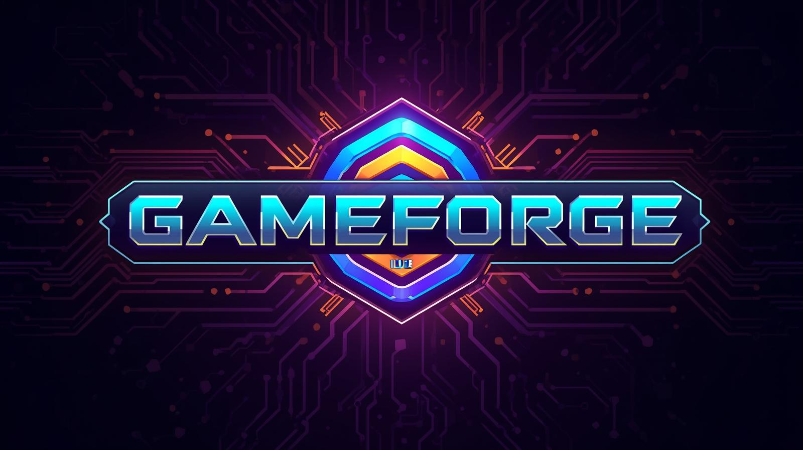

🎮 Project Journal: GameForge IDE™

Project Type: Desktop IDE Application
Target Platform: Windows, macOS, Linux (Electron)
Tech Stack: Electron, Monaco Editor, Phaser.js, Node.js
Status: 🟡 Planning Phase
Lead Developer: Damian (Remix Steward, Civic Banhammer Wielder)
Logo: Futuristic neon circuit board design with metallic "GAMEFORGE IDE" text and glowing geometric frames - perfect for a high-tech game development IDE! 🎮✨
🎯 Project Overview
What does this project do?
GameForge IDE is a Phaser.js-exclusive game development environment that combines code editing, live preview, and AI assistance. Unlike AI game generators that remove creative control, GameForge keeps developers in control while providing intelligent code suggestions, rapid prototyping tools, and seamless asset management.
Key Philosophy:
- 🤝 AI Assistance, Not Replacement - Developers stay in creative control
- ⚡ Rapid Prototyping - "Vibe Coding" rapid iteration for Phaser.js
- 🎨 Phaser.js Exclusive - Focused, not diluted across multiple frameworks
- 🚀 One-Click Deploy - Web, mobile, desktop export options
🧠 Core Concept
Target Audience:
- Indie game developers
- Rapid prototypers
- Beginners learning Phaser.js
- Developers who want AI help without losing control
Unique Selling Points:
- Phaser.js-First - Built specifically for Phaser.js workflows
- AI Context-Aware - Understands Phaser architecture (Scenes, Groups, Physics)
- Live Preview - Instant feedback loop
- Asset Pipeline - Drag-and-drop sprites/audio → auto-generate load code
- Template Library - Game starter templates (platformer, shooter, puzzle)
🧩 Planned Features
MVP (v1.0) - Core Functionality
1. Monaco Editor - Code Editing with Phaser.js Support
Description: Full-featured code editor using Monaco Editor (VS Code's editor engine)
Features:
- Syntax highlighting for JavaScript/TypeScript
- Phaser.js autocomplete and IntelliSense
- Code snippets for common Phaser patterns:
- Scene creation template
- Sprite creation shortcuts
- Physics body setup
- Input handling patterns
- Multi-file editing (tabs)
- Find & replace
- Code folding
- Error highlighting (basic syntax errors)
Technical Notes:
- Monaco Editor is self-contained, works in Electron
- Can load Phaser.js type definitions for autocomplete
- Custom language server for Phaser-specific suggestions (optional)
2. Live Preview Pane - Hot Reload Phaser Game
Description: Real-time preview of Phaser game that updates as you code
Features:
- Webview/iframe running Phaser.js
- Hot reload on file save (or auto-save on change)
- Debug console output visible
- Resizable preview pane
- Fullscreen preview mode
- Camera control (pause, step frame, restart)
Technical Notes:
- Electron's
<webview> tag or BrowserWindow
- File watcher for auto-reload
- Inject Phaser.js into preview context
- Handle asset loading (sprites, audio, etc.)
3. File Tree - Project Management
Description: Sidebar file explorer for project navigation
Features:
- Navigate project folders
- Create new files/folders
- Delete files/folders
- Rename files
- Open files in editor
- Show file icons (HTML, JS, CSS, images, etc.)
- Filter/search files
Technical Notes:
- Electron's
fs module for file operations
- Tree view component (maybe use existing library)
- Context menu for file operations
- Handle file system events (external changes)
4. Asset Browser - Media Management
Description: Visual browser for game assets (sprites, audio, tiles)
Features:
- Browse assets folder
- Preview images (sprites, tiles)
- Preview audio (play button)
- Drag-and-drop assets into project
- Copy asset paths to clipboard
- Auto-generate asset loading code
- Supported formats:
- Images: PNG, JPG, GIF, SVG
- Audio: MP3, OGG, WAV
- JSON: Tiled maps, sprite sheets
Technical Notes:
- Thumbnail generation for images
- Audio waveform visualization (optional)
- Copy asset files to project on add
- Generate
this.load.image() code snippets
5. AI Chat Panel - Phaser-Aware Code Assistance
Description: Context-aware AI chat that understands Phaser.js architecture
Features:
- Chat interface for code questions
- Phaser-specific context awareness:
- Understands Scenes, Groups, Physics
- Knows Phaser API patterns
- Suggests best practices
- Code generation (on request):
- Scene templates
- Player controller examples
- Enemy AI patterns
- Collision detection code
- Explanation of Phaser concepts
- Debugging help
Technical Notes:
- Integrate OpenAI/Anthropic API
- User-provided API keys - Users bring their own OpenAI API key (transparent, user-controlled)
- Send current file context to AI
- System prompt: "You are a Phaser.js expert..."
- Rate limiting and cost management handled by user's API account
- Local model option (future)
6. Project Templates - Starter Game Templates
Description: Pre-built game templates to jumpstart development
Templates Included:
- Blank Project - Minimal Phaser setup
- Platformer - Player, platforms, basic physics
- Top-Down Shooter - Player movement, shooting, enemies
- Puzzle Game - Basic grid-based puzzle framework
- Endless Runner - Scrolling background, obstacles
Template Contents:
- Project structure
- Core scene files
- Asset loading code
- Basic game loop
- Comments and documentation
Technical Notes:
- Store templates in
/templates/ folder
- Copy template files on project creation
- Allow customization (game name, dimensions, etc.)
- Update template library over time
7. Genre Rule Files - Configuration Files for Game Genres
Description: Preset configuration files that define common patterns, best practices, and AI context rules for different game genres.
Purpose:
- Help AI understand genre-specific patterns
- Provide code validation rules
- Suggest appropriate Phaser.js patterns for each genre
- Guide developers with genre-specific best practices
Genre Rule Files Included:
platformer.json - Platformer game rules
- Jump mechanics patterns
- Collision detection best practices
- Camera follow patterns
- Physics settings (gravity, friction)
- Common enemy types (patrol, chase)
- Collectible patterns
shooter.json - Top-down shooter rules
- Shooting mechanics (bullet patterns, spread, auto-fire)
- Enemy spawning patterns
- Health system patterns
- Weapon system structure
- Score/combos
- Power-up patterns
puzzle.json - Puzzle game rules
- Grid-based mechanics
- Match/swap patterns
- Win condition checks
- Level progression
- Hint systems
runner.json - Endless runner rules
- Procedural generation patterns
- Scrolling camera
- Obstacle spawning
- Speed progression
- Score multipliers
rpg.json - RPG rules (future)
- Stats system
- Inventory patterns
- Dialogue systems
- Quest/task systems
How It Works:
- User selects genre when creating project (or adds later)
- Genre rule file loaded into AI context
- AI suggestions align with genre patterns
- Code snippets follow genre conventions
- Validation checks ensure genre consistency
Rule File Structure (example):
{
"genre": "platformer",
"commonPatterns": {
"player": {
"movement": "horizontal + jump",
"physics": {
"gravity": 800,
"jumpSpeed": -600,
"maxSpeed": 200
},
"collisionLayers": ["platforms", "enemies", "pickups"]
},
"enemies": {
"types": ["patrol", "chase", "static"],
"spawnPatterns": ["onPlatform", "random", "fixed"]
},
"camera": {
"follow": "player",
"bounds": "levelBounds",
"deadzone": 50
}
},
"aiSuggestions": {
"context": "You are helping create a platformer game. Common patterns include: horizontal movement with arrow keys, space/jump, platform collision, enemy collision, collectibles.",
"codeExamples": [...]
},
"validationRules": {
"requiredComponents": ["player", "platforms", "collision"],
"recommendedPatterns": ["scene transitions", "audio feedback"]
}
}
Benefits:
- AI provides genre-appropriate suggestions
- Consistent code patterns across projects
- Faster development (know what patterns to use)
- Better code quality (follows genre best practices)
- Easier to extend (add new genres)
Technical Notes:
- JSON format for easy editing
- Stored in
/templates/genre-rules/ folder
- Loaded into AI system prompt
- Can be customized per project
- Community-contributed rules (future)
v2.0 - Enhanced Features
🎨 UI/UX Design Considerations
Design Philosophy
Core Principles:
- Code-First, Visual-Assist - Code editor is primary, visual tools support it
- Rapid Feedback - See changes instantly in live preview
- Minimal Mental Overhead - UI stays out of the way while coding
- Familiar Patterns - Leverage VS Code/IDE conventions users already know
- Customizable - Users can adjust layout, themes, shortcuts
Visual Style:
- Clean, modern interface
- Dark theme by default (better for long coding sessions)
- Light theme option
- Subtle animations for feedback (not distracting)
- Clear visual hierarchy
Layout & Panels
Main Layout Structure:
┌─────────────────────────────────────────────────────────────┐
│ [Menu Bar] [Toolbar] [Themes] │
├──────────┬───────────────────────────────────┬──────────────┤
│ │ │ │
│ File │ │ AI Chat │
│ Tree │ Monaco Editor │ Panel │
│ │ (Main Code Area) │ │
│ [Open] │ │ [Context] │
│ Files │ [Tabs: file1.js, file2.js] │ [Messages] │
│ │ │ │
│ [Asset] ├───────────────────────────────────┼──────────────┤
│ Browser │ │ │
│ │ Live Preview Pane │ Asset │
│ [List] │ (Phaser Game Running) │ Browser │
│ │ │ │
│ │ [Pause] [Restart] [Console] │ [Preview] │
└──────────┴───────────────────────────────────┴──────────────┘
Panel Details:
1. File Tree Panel (Left Sidebar)
- Expandable folder structure
- File icons (JS, HTML, CSS, images, etc.)
- Right-click context menu (New, Delete, Rename)
- Currently open file highlighted
- Search/filter box at top
- Collapsible (can hide for more editor space)
2. Monaco Editor (Center)
- Takes up majority of screen space
- Tabbed interface for multiple files
- Split view option (side-by-side editing)
- Line numbers, syntax highlighting
- Minimap (right side, optional)
- Find & replace bar (Ctrl+F)
- Breadcrumb navigation (file path)
3. Live Preview Pane (Bottom Center)
- Resizable split with editor
- Game canvas (Phaser.js running)
- Toolbar above canvas:
- Play/Pause button
- Restart button
- Fullscreen toggle
- Zoom controls (50%, 100%, 200%)
- Console output below canvas (collapsible)
- Error overlay (red banner if game crashes)
4. AI Chat Panel (Right Sidebar)
- Collapsible panel (can hide for more space)
- Chat messages (user/AI)
- Input box at bottom
- Context badge (shows current file being discussed)
- Code snippets render with syntax highlighting
- Copy/paste code buttons
- Token usage indicator (optional, small)
5. Asset Browser (Bottom Tab or Sidebar)
- Grid view of assets (thumbnails)
- List view option
- Filter by type (Images, Audio, JSON)
- Drag-and-drop to add assets
- Preview on hover/click
- "Generate Load Code" button
6. Scene Inspector (Bottom Tab, v2.0)
- Hierarchy of Phaser objects
- Properties panel
- Currently MVP focuses on code + preview
User Workflows
Workflow 1: Creating New Project
- Open GameForge IDE
- File → New Project
- Select template (Blank, Platformer, etc.)
- Choose project folder
- IDE opens with template files loaded
- Live preview auto-starts
- Start coding!
Workflow 2: Adding Assets
- Drag sprite/image file into Asset Browser
- Asset appears in grid
- Click "Generate Load Code" button
- Code snippet copied to clipboard
- Paste into PreloadScene.js
- Asset automatically appears in preview
Workflow 3: Getting AI Help
- Select code in editor (or type question)
- Open AI Chat panel (if closed)
- Type question or click "Explain this code"
- AI responds with Phaser-aware suggestions
- Copy code snippet to editor
- See changes instantly in preview
Workflow 4: Debugging
- Code has error → Preview shows error banner
- Click error → Editor jumps to problem line
- Check console output in preview pane
- Ask AI Chat "What's wrong with this Phaser code?"
- Fix code → Preview auto-reloads
- Success!
Visual Design Details
Color Scheme (Dark Theme - Default):
- Background:
#1e1e1e (VS Code dark)
- Editor background:
#252526
- Text:
#cccccc
- Accent:
#0e639c (blue for actions)
- Success:
#4ec9b0 (green for successful operations)
- Error:
#f48771 (red for errors)
- Warning:
#dcdcaa (yellow for warnings)
Color Scheme (Light Theme - Option):
- Background:
#ffffff
- Editor background:
#f8f8f8
- Text:
#333333
- Accent:
#007acc
- Similar contrast ratios for accessibility
Typography:
- Monospace font for code (Consolas, 'Courier New', Monaco)
- Sans-serif for UI (system default)
- Clear size hierarchy (h1: 24px, body: 14px, code: 13px)
Icons:
- Consistent icon set (maybe Feather Icons or Heroicons)
- Clear visual meaning
- Subdued colors (not distracting)
Spacing:
- Generous padding (8px base unit)
- Clear separation between panels
- Comfortable line height in editor
Keyboard Shortcuts
Essential Shortcuts:
Ctrl+N / Cmd+N - New fileCtrl+S / Cmd+S - Save fileCtrl+Shift+P / Cmd+Shift+P - Command paletteCtrl+B / Cmd+B - Toggle file tree sidebarCtrl+ / Cmd+ - Toggle terminal/consoleCtrl+/ / Cmd+/ - Toggle commentF5 - Run/preview gameCtrl+Shift+F / Cmd+Shift+F - Find in filesCtrl+P / Cmd+P - Quick file open
Editor Shortcuts (Monaco defaults):
Ctrl+D / Cmd+D - Select next occurrenceAlt+Up/Down - Move line up/downCtrl+Shift+K / Cmd+Shift+K - Delete lineCtrl+Enter / Cmd+Enter - Insert line below
Custom GameForge Shortcuts:
Ctrl+Shift+A / Cmd+Shift+A - Open AI ChatCtrl+Shift+P / Cmd+Shift+P - Open Asset BrowserCtrl+Shift+L / Cmd+Shift+L - Toggle live preview
Accessibility Features
Included:
- Keyboard navigation for all UI elements
- Screen reader support (ARIA labels)
- High contrast mode option
- Font size adjustment
- Color blind friendly color schemes
- Focus indicators clearly visible
Considerations:
- All panels resizable/dockable
- Dense/spacious layout options
- Reduced motion option (for animations)
Responsive Layout Features
Panel Resizing:
- Drag borders to resize panels
- Double-click borders to collapse/expand
- "Maximize Editor" button (hides all sidebars)
- "Restore Layout" button (resets to default)
Window Management:
- Remember window size/position
- Multi-monitor support
- Maximize editor option (fullscreen coding)
User Experience Enhancements
Onboarding:
- Welcome screen on first launch
- Quick tutorial (5-minute walkthrough)
- Sample project included
- Tooltips for first-time users
Progress Indicators:
- Loading spinner for asset operations
- Progress bar for large file operations
- Toast notifications for success/errors
Error Handling:
- Clear error messages
- Suggestions for fixing errors
- Link to documentation
- AI chat can help debug
Customization:
- Theme selector (Dark/Light/High Contrast)
- Font size slider
- Layout presets (Code Focus, Preview Focus, Balanced)
- Custom keyboard shortcuts
Future UX Considerations (v2.0+)
- Visual scene editor (drag-and-drop canvas)
- Animation timeline (visual keyframe editor)
- Asset optimization tools (spritesheet builder)
- Project templates marketplace
- Community plugins/extensions
- Tutorial system integrated
- Code snippets library
🛠️ Technical Architecture
Electron Application Structure
Main Process (src/main/):
- Application entry point (
main.js)
- Window management (create, resize, close)
- Menu bar (File, Edit, View, Help)
- File system operations (read/write files)
- Process management
- IPC (Inter-Process Communication) handlers
Renderer Process (src/renderer/):
- UI components (React/Vue/vanilla JS)
- Monaco Editor integration
- Live preview webview
- AI chat interface
- Asset browser UI
- File tree component
Shared Utilities (src/shared/):
- Project configuration parser
- Genre rule file loader
- Asset path utilities
- Code generation helpers
- Template system
Core Components Architecture
1. Monaco Editor Integration
Setup:
// Load Monaco Editor
import * as monaco from 'monaco-editor';
// Create editor instance
const editor = monaco.editor.create(container, {
value: code,
language: 'javascript',
theme: 'vs-dark',
minimap: { enabled: true },
fontSize: 14
});
Phaser.js Type Definitions:
- Load Phaser.js type definitions for autocomplete
- Custom snippet provider for Phaser patterns
- Syntax highlighting for Phaser-specific code
File Management:
- Tab system for multiple files
- File watcher for external changes
- Auto-save on blur/change
- Undo/redo support
Code Intelligence:
- Autocomplete for Phaser API
- Hover documentation
- Error detection (syntax, Phaser-specific)
- Find references / Go to definition
2. Live Preview Pane
Implementation:
// Electron webview for Phaser preview
<webview
src="preview.html"
preload="preload.js"
nodeintegration="false"
></webview>
Hot Reload System:
- File watcher monitors project files
- On change: rebuild bundle → inject into preview
- Error handling: show error overlay
- Console capture: redirect console.log to IDE console
Preview Features:
- Resizable canvas (drag to resize)
- Zoom controls (50%, 100%, 200%)
- Fullscreen mode
- Pause/Resume/Restart buttons
- Performance metrics (FPS, memory)
Communication:
- IPC between preview and main process
- Message passing for game state
- Debug info capture
3. AI Chat Panel
API Integration:
// OpenAI API client
const openai = new OpenAI({
apiKey: userApiKey // From secure storage
});
// Send request with context
const response = await openai.chat.completions.create({
model: 'gpt-4',
messages: [
{
role: 'system',
content: genreRuleFile.aiContext + phaserContext
},
{
role: 'user',
content: userQuestion + currentFileContext
}
]
});
Context Management:
- Load genre rule file for context
- Include current file code in prompt
- Track conversation history
- Token usage estimation
- Rate limiting (user's API quota)
UI Features:
- Chat message bubbles
- Code syntax highlighting in responses
- Copy code button
- Insert code button (pastes into editor)
- Context badge (shows current file/genre)
Security:
- API keys stored in Electron's secure storage
- Never sent to external servers (except OpenAI)
- Optional: Local model support (future)
4. File Tree Component
Implementation:
// File system operations
const fs = require('fs').promises;
const path = require('path');
// Read directory structure
async function readProjectTree(projectPath) {
// Recursive directory reading
// Build tree structure
// Return JSON tree
}
Features:
- Expandable/collapsible folders
- File icons (by extension)
- Right-click context menu
- Drag-and-drop file reordering
- Search/filter files
- Show/hide hidden files
File Operations:
- Create file/folder
- Delete file/folder
- Rename file/folder
- Open file in editor
- Open in file explorer (external)
5. Asset Browser
Asset Management:
// Scan assets folder
async function scanAssets(assetsPath) {
const files = await fs.readdir(assetsPath);
return files.map(file => ({
name: file,
path: path.join(assetsPath, file),
type: getFileType(file),
thumbnail: generateThumbnail(file)
}));
}
Features:
- Grid view with thumbnails
- List view option
- Filter by type (Images, Audio, JSON)
- Preview on hover/click
- Drag-and-drop to add assets
- Generate load code (copies to clipboard)
Code Generation:
// Generate Phaser load code
function generateLoadCode(asset) {
if (asset.type === 'image') {
return `this.load.image('${asset.key}', '${asset.path}');`;
} else if (asset.type === 'audio') {
return `this.load.audio('${asset.key}', '${asset.path}');`;
}
// etc.
}
6. Project Templates System
Template Structure:
templates/
├── blank/
│ ├── index.html
│ ├── src/
│ │ ├── main.js
│ │ └── scenes/
│ └── package.json
├── platformer/
│ ├── index.html
│ ├── src/
│ │ ├── main.js
│ │ ├── config.js
│ │ └── scenes/
│ └── package.json
└── genre-rules/
├── platformer.json
├── shooter.json
└── ...
Template Loading:
- Copy template files to project folder
- Replace placeholder variables (game name, dimensions)
- Initialize project configuration
- Load genre rule file
- Set up default assets folder
7. Genre Rule Files System
Rule File Loader:
// Load genre rule file
async function loadGenreRules(genre) {
const rulePath = path.join(__dirname, 'templates/genre-rules/', `${genre}.json`);
const rules = await fs.readFile(rulePath, 'utf-8');
return JSON.parse(rules);
}
AI Context Integration:
- Merge genre rules into AI system prompt
- Update AI context when genre changes
- Provide code examples from rule file
- Validation checks based on rules
Customization:
- Users can edit rule files
- Project-specific rule overrides
- Community-contributed rules (future)
Data Flow Examples
Example 1: User Types Code → Preview Updates
- User types in Monaco Editor
- Auto-save triggers (on change or blur)
- File watcher detects change
- Webpack/dev server rebuilds bundle
- Preview webview reloads automatically
- User sees changes instantly
Example 2: User Asks AI for Help
- User selects code + types question
- AI Chat panel sends request:
- Current file code
- Genre rule file context
- User question
- OpenAI API responds with suggestion
- AI Chat displays response with syntax highlighting
- User clicks "Insert Code" button
- Code pasted into editor at cursor
Example 3: User Adds Asset
- User drags sprite.png into Asset Browser
- File copied to project's assets folder
- Asset Browser scans and displays thumbnail
- User clicks "Generate Load Code"
- Code snippet:
this.load.image('sprite', 'assets/sprite.png')
- Code copied to clipboard
- User pastes into PreloadScene.js
- Preview reloads, sprite appears
Performance Considerations
Monaco Editor:
- Lazy load for large files
- Virtual scrolling for long files
- Debounce auto-save to avoid excessive writes
Live Preview:
- Throttle reload frequency (max once per second)
- Only reload changed files
- Memory management for preview webview
File Operations:
- Async file operations (don't block UI)
- Background file watching
- Debounce file tree updates
AI API:
- Queue requests (prevent spam)
- Cache common responses (optional)
- Show loading indicators
- Handle API errors gracefully
Security Considerations
API Key Storage:
// Electron secure storage
const { safeStorage } = require('electron').safeStorage;
// Encrypt API key
const encrypted = safeStorage.encryptString(apiKey);
// Decrypt API key
const decrypted = safeStorage.decryptString(encrypted);
File System:
- Sandbox project files (don't access outside project)
- Validate file paths (prevent directory traversal)
- Secure file operations (user permissions)
Webview Security:
- Disable node integration in preview
- CSP (Content Security Policy) headers
- Isolated preview context
Build & Deployment
Development:
npm run dev # Start Electron dev mode
npm run build # Build for production
npm run package # Package app (Windows/Mac/Linux)
Electron Builder:
- Cross-platform builds (Windows, macOS, Linux)
- Auto-updater integration (future)
- Code signing (for distribution)
- Installer creation (.exe, .dmg, .deb)
Dependencies:
- Electron (~25MB base)
- Monaco Editor (~5MB)
- Phaser.js (loaded in preview, not bundled)
- Node modules (~100MB+)
Testing Strategy
Unit Tests:
- File operations (create, delete, rename)
- Code generation utilities
- Genre rule file parsing
- Asset browser logic
Integration Tests:
- Monaco Editor operations
- Preview webview communication
- AI API integration
- File tree operations
E2E Tests:
- Create project → Add code → See preview
- Ask AI → Get response → Insert code
- Add asset → Generate code → Use in game
Core Stack:
- Electron - Desktop app framework
- Monaco Editor - VS Code's editor component
- Phaser.js - Live preview engine
- Node.js - File system, project management
- AI API - OpenAI/Anthropic/Claude integration (user-provided API keys)
UI Layout:
┌─────────────────────────────────────────────┐
│ [File Tree] [Code Editor] [AI Chat Panel] │
│ │
│ [ Live Preview Pane ] │
│ │
│ [Asset Browser] [Scene Inspector] │
└─────────────────────────────────────────────┘
File Structure (proposed):
GameForge/
├── src/
│ ├── main/ # Electron main process
│ ├── renderer/ # UI components
│ │ ├── editor/ # Monaco Editor integration
│ │ ├── preview/ # Phaser preview pane
│ │ ├── assets/ # Asset browser
│ │ └── ai/ # AI chat panel
│ └── shared/ # Shared utilities
├── templates/ # Game starter templates
├── assets/ # IDE assets (icons, UI)
└── PROJECT_JOURNAL.md # This file - maintains project memory and context
Note: GameForge IDE itself uses the PROJECT_JOURNAL.md technique for maintaining context across development sessions. This proven workflow ensures continuity, decision tracking, and clear documentation - the same system that keeps Damo The Troll Killer development organized and efficient.
🗺️ Implementation Roadmap
Phase 1: Foundation (Weeks 1-2)
Goal: Get basic Electron app running with core structure
Tasks:
Deliverable: Working Electron app with basic UI layout
Phase 2: Editor Integration (Weeks 3-4)
Goal: Integrate Monaco Editor with file management
Tasks:
Deliverable: Working code editor with file management
Phase 3: Live Preview (Weeks 5-6)
Goal: Get Phaser game running in preview pane
Tasks:
Deliverable: Live preview pane with hot reload
Phase 4: Project Management (Weeks 7-8)
Goal: Users can create and manage projects
Tasks:
Deliverable: Complete project management system
Phase 5: Asset Browser (Weeks 9-10)
Goal: Visual asset management with code generation
Tasks:
Deliverable: Working asset browser with code generation
Phase 6: AI Integration (Weeks 11-12)
Goal: AI chat panel with Phaser-aware assistance
Tasks:
Deliverable: Working AI chat with Phaser-aware assistance
Phase 7: Genre Rule Files (Weeks 13-14)
Goal: Genre-specific AI assistance
Tasks:
Deliverable: Genre-aware AI assistance
Phase 8: Polish & Testing (Weeks 15-16)
Goal: Polish UI, fix bugs, prepare for release
Tasks:
Deliverable: Polished, tested MVP ready for beta release
Phase 9: Beta Release & Feedback (Weeks 17-20)
Goal: Release beta version and gather feedback
Tasks:
Deliverable: Beta version with user feedback
Phase 10: v1.0 Release (Weeks 21-24)
Goal: Release stable v1.0 version
Tasks:
Deliverable: Stable v1.0 release
Post-v1.0: v2.0 Features (Future)
- Visual Scene Editor
- Animation Timeline Editor
- Mobile Export
- Plugin System
- Sprite Sheet Generator
- Tiled Map Integration
- Community features
🔐 API Key Management UI
Design Overview
Location: Settings Panel (accessible via menu: File → Settings or Ctrl+,)
Purpose: Allow users to securely enter and manage their AI API keys for different providers (OpenAI, Anthropic, etc.)
Design Principles:
- Clear and simple (no confusion)
- Secure (keys never visible in plain text)
- Transparent (users understand what they're doing)
- Helpful (clear instructions and links)
UI Layout
┌─────────────────────────────────────────────────────┐
│ Settings [X] │
├─────────────────────────────────────────────────────┤
│ │
│ Navigation: │
│ ├─ General │
│ ├─ Editor │
│ ├─ ⚙️ AI Providers (Selected) │
│ ├─ Themes │
│ └─ Advanced │
│ │
│ ┌─────────────────────────────────────────────┐ │
│ │ AI Provider API Keys │ │
│ │ │ │
│ │ Users provide their own API keys. GameForge │ │
│ │ never stores or charges for API usage. │ │
│ │ │ │
│ │ ┌─────────────────────────────────────────┐ │ │
│ │ │ OpenAI │ │ │
│ │ │ ──────────────────────────────────────── │ │ │
│ │ │ Status: ✅ Configured │ │ │
│ │ │ │ │ │
│ │ │ API Key: [••••••••••••••••sk-...] [👁️] │ │ │
│ │ │ │ │ │
│ │ │ Model: [GPT-4 Turbo ▼] │ │ │
│ │ │ │ │ │
│ │ │ [Test Connection] [Remove Key] │ │ │
│ │ │ │ │ │
│ │ │ Usage: ~$0.23 this month (from your │ │ │
│ │ │ OpenAI account) │ │ │
│ │ └─────────────────────────────────────────┘ │ │
│ │ │ │
│ │ ┌─────────────────────────────────────────┐ │ │
│ │ │ Anthropic (Claude) │ │ │
│ │ │ ──────────────────────────────────────── │ │ │
│ │ │ Status: ⚠️ Not Configured │ │ │
│ │ │ │ │ │
│ │ │ API Key: [Enter your API key...] │ │ │
│ │ │ │ │ │
│ │ │ Model: [Claude 3.5 Sonnet ▼] │ │ │
│ │ │ │ │ │
│ │ │ [Get API Key] [Test Connection] │ │ │
│ │ └─────────────────────────────────────────┘ │ │
│ │ │ │
│ │ [Add Provider +] │ │
│ │ │ │
│ │ [Save] [Cancel] │ │
│ └─────────────────────────────────────────────┘ │
│ │
└─────────────────────────────────────────────────────┘
Components
1. Provider Card
Display:
- Provider name (OpenAI, Anthropic, etc.)
- Status indicator (✅ Configured, ⚠️ Not Configured, ❌ Error)
- API Key input field (masked by default)
- Model selector dropdown
- Action buttons (Test Connection, Remove Key)
API Key Input:
- Masked display (shows bullets:
••••••••••••••••sk-...)
- Show/Hide toggle button (👁️ icon)
- Placeholder: "Enter your API key..."
- Validation: Check format (OpenAI keys start with
sk-, etc.)
- Real-time validation feedback
Status Indicators:
- ✅ Configured - Green checkmark, key saved and test passed
- ⚠️ Not Configured - Yellow warning, no key entered
- ❌ Error - Red X, key invalid or test failed
- 🔄 Testing - Spinner, connection test in progress
2. Model Selector
Available Models:
OpenAI:
- GPT-4 Turbo (recommended)
- GPT-4
- GPT-3.5 Turbo (cheaper option)
Anthropic:
- Claude 3.5 Sonnet (recommended)
- Claude 3 Opus
- Claude 3 Haiku (faster/cheaper)
UI:
- Dropdown selector
- Model description (speed, cost, capabilities)
- Cost indicator (estimated cost per request)
3. Test Connection Button
Functionality:
- Sends test request to API
- Validates API key
- Shows result (success/error)
- Updates status indicator
Test Request:
// Simple test: "Say 'API connection successful'"
const testResponse = await api.testConnection({
provider: 'openai',
apiKey: userApiKey,
model: selectedModel
});
Feedback:
- Success: "✅ Connection successful!"
- Error: "❌ Connection failed: [error message]"
- Loading: Spinner animation
4. Usage Display
Information Shown:
- Estimated usage this month (read-only, from user's API account)
- Link to provider's usage dashboard
- Token usage per request (optional)
Note: User manages their own API usage through provider's dashboard. GameForge IDE doesn't track or charge for usage.
5. Help Section
Content:
- "How to get an API key" links for each provider
- "Where to find your API key" instructions
- "How GameForge uses your API key" explanation
- Security/privacy information
Links:
User Workflow
Adding/Updating API Key:
- User opens Settings (
File → Settings or Ctrl+,)
- Clicks "AI Providers" tab
- Selects provider (e.g., OpenAI)
- Clicks in API Key field
- Pastes API key (or types it)
- Selects model from dropdown
- Clicks "Test Connection"
- Sees success/error message
- Status updates to "✅ Configured"
- Clicks "Save"
- API key encrypted and stored securely
Removing API Key:
- User opens Settings
- Finds provider card
- Clicks "Remove Key" button
- Confirmation dialog appears
- User confirms
- Key removed from storage
- Status updates to "⚠️ Not Configured"
Security Implementation
Storage:
// Electron secure storage
const { safeStorage } = require('electron').safeStorage;
// Encrypt API key
function saveApiKey(provider, apiKey) {
if (!safeStorage.isEncryptionAvailable()) {
// Fallback: Show warning, use system keychain
return false;
}
const encrypted = safeStorage.encryptString(apiKey);
// Store encrypted key in app data
store.set(`apiKeys.${provider}`, encrypted);
}
// Decrypt API key
function loadApiKey(provider) {
const encrypted = store.get(`apiKeys.${provider}`);
if (!encrypted) return null;
try {
return safeStorage.decryptString(encrypted);
} catch (error) {
// Handle decryption error
return null;
}
}
Security Features:
- Keys encrypted at rest (Electron safeStorage)
- Keys never sent to GameForge servers (only to AI provider)
- Masked by default (show/hide toggle)
- Clear warnings about key security
- Option to remove keys at any time
Error Handling
Common Errors:
- Invalid API Key Format - "API key format is invalid. OpenAI keys start with 'sk-'"
- Connection Failed - "Could not connect to API. Check your internet connection."
- Unauthorized - "API key is invalid or expired. Please check your key."
- Rate Limited - "Rate limit reached. Check your API usage limits."
- Encryption Unavailable - "Secure storage not available. Using system keychain instead."
Error Messages:
- Clear, actionable error messages
- Links to provider documentation
- Suggestions for fixing issues
Future Enhancements
- Multiple API keys per provider (switch between keys)
- Usage quota warnings (user sets limits)
- Local model support (no API key needed)
- Community-contributed providers
- API key import/export (encrypted, for backup)
📚 Template Library Details
Template Structure
Base Template Structure:
templates/
├── blank/
│ ├── index.html
│ ├── package.json
│ ├── webpack.config.js
│ ├── assets/
│ │ └── (empty, ready for assets)
│ └── src/
│ ├── main.js
│ ├── config.js
│ └── scenes/
│ ├── PreloadScene.js
│ ├── TitleScene.js
│ └── GameScene.js
│
├── platformer/
│ ├── index.html
│ ├── package.json
│ ├── webpack.config.js
│ ├── assets/
│ │ ├── images/
│ │ │ └── (placeholder sprites)
│ │ └── audio/
│ │ └── (placeholder sounds)
│ └── src/
│ ├── main.js
│ ├── config.js
│ ├── entities/
│ │ ├── Player.js
│ │ └── Enemy.js
│ └── scenes/
│ ├── PreloadScene.js
│ ├── TitleScene.js
│ └── GameScene.js
│
├── shooter/
│ └── (similar structure)
│
├── puzzle/
│ └── (similar structure)
│
├── runner/
│ └── (similar structure)
│
└── genre-rules/
├── platformer.json
├── shooter.json
├── puzzle.json
├── runner.json
└── rpg.json
Template Descriptions
1. Blank Template
Purpose: Minimal Phaser.js setup for starting from scratch
Files Included:
index.html - Basic HTML structurepackage.json - Dependencies (Phaser.js, webpack)webpack.config.js - Build configurationsrc/main.js - Game initializationsrc/config.js - Game configuration (dimensions, physics)src/scenes/PreloadScene.js - Asset loading scenesrc/scenes/TitleScene.js - Basic title screensrc/scenes/GameScene.js - Empty game scene
Features:
- Basic Phaser.js setup
- Scene management structure
- Webpack bundling ready
- No game logic (clean slate)
Best For:
- Experienced developers
- Custom game ideas
- Learning Phaser.js structure
2. Platformer Template
Purpose: Complete platformer game foundation
Files Included:
- All base template files
src/entities/Player.js - Player controller with:
- Horizontal movement (arrow keys)
- Jump mechanic (spacebar)
- Physics body setup
- Animation states (idle, walk, jump)
src/entities/Enemy.js - Basic enemy with:
- Patrol AI
- Collision detection
- Damage handling
src/scenes/GameScene.js - Fully implemented with:
- Platform creation
- Player spawning
- Enemy spawning
- Collision handling
- Basic UI (score, health)
Features:
- Working player movement
- Jump physics
- Platform collision
- Enemy AI (patrol)
- Basic UI
- Camera follow player
- Collectibles system
Customization Points:
- Player speed, jump height
- Gravity settings
- Enemy behavior
- Platform layout
- Level dimensions
Best For:
- Platformer games
- Learning Phaser physics
- Quick prototypes
3. Top-Down Shooter Template
Purpose: Complete top-down shooter foundation
Files Included:
- All base template files
src/entities/Player.js - Player controller with:
- 8-directional movement (WASD/arrows)
- Rotation toward mouse cursor
- Smooth movement
src/entities/Bullet.js - Bullet entity with:
- Velocity-based movement
- Lifetime management
- Collision detection
src/entities/Enemy.js - Enemy with:
- Chase AI (moves toward player)
- Shooting behavior
- Health system
src/scenes/GameScene.js - Fully implemented with:
- Shooting mechanics
- Bullet pooling
- Enemy spawning (waves)
- Score system
- Health bar
Features:
- 8-directional movement
- Mouse-aim shooting
- Bullet pooling (performance)
- Enemy waves
- Score/health system
- Power-up system (optional)
Customization Points:
- Player speed, rotation speed
- Bullet speed, damage
- Enemy spawn rate, health
- Shooting patterns
- Power-up types
Best For:
- Action games
- Shooter prototypes
- Learning bullet mechanics
4. Puzzle Game Template
Purpose: Grid-based puzzle game foundation
Files Included:
- All base template files
src/utils/Grid.js - Grid management utilitysrc/entities/Tile.js - Tile entity for gridsrc/scenes/GameScene.js - Fully implemented with:
- Grid system (configurable size)
- Tile matching logic
- Swap/match detection
- Win condition checking
- Level progression
Features:
- Configurable grid (6x6, 8x8, etc.)
- Tile matching system
- Swap animation
- Match detection
- Score calculation
- Level progression
- Timer (optional)
Customization Points:
- Grid size
- Tile types/count
- Match rules (3-in-a-row, etc.)
- Win conditions
- Difficulty curve
Best For:
- Match-3 games
- Puzzle game prototypes
- Learning grid-based logic
5. Endless Runner Template
Purpose: Side-scrolling endless runner foundation
Files Included:
- All base template files
src/entities/Player.js - Runner with:
- Jump mechanic (spacebar)
- Duck mechanic (down arrow)
- Animations (run, jump, duck)
src/entities/Obstacle.js - Obstacle entitysrc/utils/Scroller.js - Background scrollingsrc/scenes/GameScene.js - Fully implemented with:
- Procedural obstacle generation
- Scrolling background
- Score system (distance)
- Speed progression
- Game over logic
Features:
- Scrolling background
- Procedural obstacles
- Jump/duck mechanics
- Speed progression
- Score system (distance)
- Collision detection
- Game over screen
Customization Points:
- Player speed
- Obstacle frequency
- Background themes
- Power-ups (speed boost, shield)
- Difficulty curve
Best For:
- Endless runner games
- Simple mobile games
- Learning procedural generation
Template Customization
When Creating Project:
- Project Name - Replace
{{GAME_NAME}} in all files
- Game Dimensions - Set width/height in
config.js
- Genre Selection - Loads corresponding genre rule file
- Asset Folders - Creates
assets/images/ and assets/audio/ folders
Placeholder Variables:
// In template files:
const GAME_NAME = '{{GAME_NAME}}';
const GAME_WIDTH = {{GAME_WIDTH}};
const GAME_HEIGHT = {{GAME_HEIGHT}};
const GENRE = '{{GENRE}}';
Replacement Process:
// When creating project:
function customizeTemplate(templatePath, projectName, dimensions, genre) {
// Read template files
// Replace placeholders:
// {{GAME_NAME}} → projectName
// {{GAME_WIDTH}} → dimensions.width
// {{GAME_HEIGHT}} → dimensions.height
// {{GENRE}} → genre
// Copy to project folder
}
Template Metadata
Template Info File (template.json):
{
"id": "platformer",
"name": "Platformer",
"description": "Complete platformer game foundation with player, enemies, and platforms",
"genre": "platformer",
"version": "1.0.0",
"author": "GameForge IDE",
"features": [
"Player movement",
"Jump mechanics",
"Enemy AI",
"Platform collision",
"Basic UI"
],
"difficulty": "beginner",
"estimatedTime": "2-4 hours to customize",
"screenshots": ["screenshot1.png"],
"video": "demo.mp4"
}
Display in UI:
- Template card with screenshot
- Description and features list
- Difficulty indicator
- Estimated customization time
- Preview video (optional)
Template Management
Adding New Templates:
- Create template folder in
/templates/
- Add
template.json metadata file
- Create template files
- Test template creation
- Add to template list in UI
Updating Templates:
- Edit template files
- Update version number
- Test template creation
- Update documentation
User Custom Templates:
- Users can create custom templates
- Save templates in user folder
- Share templates with community (future)
Template Best Practices
Code Quality:
- Clean, commented code
- Follow Phaser.js best practices
- Use consistent naming conventions
- Include error handling
Documentation:
- Inline comments explaining logic
- README.md in each template
- Code examples for customization
- Common pitfalls noted
Extensibility:
- Easy to customize
- Clear separation of concerns
- Modular code structure
- Configurable values
Performance:
- Optimized for performance
- Object pooling where appropriate
- Efficient collision detection
- Memory management
🚀 Export & Deployment
Overview
Purpose: Allow users to export their Phaser.js games as deployable packages for web, mobile, or desktop platforms.
Philosophy: Simple, one-click export with customizable options. Users shouldn't need to understand build tools—GameForge handles it.
Web Export (Primary)
Output Format:
- Static HTML/CSS/JS files
- Ready to deploy to any web hosting
- Self-contained bundle (all assets included)
Export Process:
- User clicks
File → Export → Web
- Select export options:
- Minify code (production builds)
- Optimize assets (compress images)
- Include source maps (debugging)
- Service worker (PWA support - optional)
- Choose export folder
- GameForge builds project:
- Runs webpack production build
- Copies assets
- Generates
index.html
- Creates deployment-ready folder
- Export complete! Folder ready to upload
Export Structure:
export/
├── index.html # Main HTML file
├── dist/
│ └── main.js # Bundled game code (minified)
├── assets/
│ ├── images/ # All game images
│ └── audio/ # All game audio
└── README.md # Deployment instructions
Deployment Options:
- GitHub Pages - One-click deploy (if GitHub repo)
- Netlify - Drag-and-drop folder
- Vercel - Connect GitHub repo
- Itch.io - Upload ZIP file
- Custom Hosting - Upload via FTP/SFTP
Export Features:
- ✅ Production build (optimized, minified)
- ✅ Asset optimization (compressed images)
- ✅ Cross-browser compatibility
- ✅ Mobile-responsive (if configured)
- ✅ PWA support (optional service worker)
Mobile Export (v1.0+)
Platforms:
- iOS (App Store)
- Android (Google Play)
Technology:
- Cordova/PhoneGap - Wrap web game as native app
- Capacitor - Modern alternative (future)
Export Process:
- User clicks
File → Export → Mobile
- Select platform:
- Configure app:
- App name
- Bundle ID/package name
- App icon (generate from image)
- Splash screen
- Permissions (camera, storage, etc.)
- GameForge builds:
- Creates Cordova project
- Adds Phaser game files
- Configures platform-specific settings
- Generates build files
- Output: Xcode project (iOS) or Android Studio project (Android)
Mobile Export Features:
- ✅ Native app wrapper
- ✅ App icon generation
- ✅ Splash screen support
- ✅ Touch controls (if configured)
- ✅ Orientation settings (portrait/landscape)
- ✅ Store listing preparation
Build Requirements:
- iOS: Xcode (Mac only), Apple Developer account ($99/year)
- Android: Android Studio, Google Play Developer account ($25 one-time)
Note: GameForge generates the project, but users need platform-specific tools for final builds.
Desktop Export (v2.0+)
Platforms:
- Windows (.exe)
- macOS (.app)
- Linux (.AppImage / .deb)
Technology:
- Electron - Similar to how GameForge IDE is built
- Package game as standalone Electron app
Export Process:
- User clicks
File → Export → Desktop
- Select platforms:
- Windows
- macOS
- Linux
- All platforms
- Configure app:
- App name
- App icon
- Window size (fixed/resizable)
- Menu bar (show/hide)
- GameForge builds:
- Creates Electron wrapper
- Bundles game files
- Packages for each platform
- Output: Installable packages (.exe, .dmg, .AppImage)
Desktop Export Features:
- ✅ Standalone executable (no browser needed)
- ✅ Cross-platform builds
- ✅ Custom window settings
- ✅ Menu bar customization
- ✅ Auto-updater support (optional)
Export UI
Export Dialog:
┌─────────────────────────────────────────────┐
│ Export Game [X] │
├─────────────────────────────────────────────┤
│ │
│ Export Type: │
│ ☑ Web (HTML/JS) │
│ ☐ Mobile (iOS/Android) │
│ ☐ Desktop (Electron) │
│ │
│ ┌─────────────────────────────────────────┐ │
│ │ Export Options │ │
│ │ │ │
│ │ ☑ Minify code │ │
│ │ ☑ Optimize assets │ │
│ │ ☐ Include source maps │ │
│ │ ☐ Add service worker (PWA) │ │
│ │ │ │
│ │ Build Size: ~2.5 MB (estimated) │ │
│ └─────────────────────────────────────────┘ │
│ │
│ Export Location: │
│ [Browse...] C:\Users\...\my-game-export │
│ │
│ [Export] [Cancel] │
└─────────────────────────────────────────────┘
Export Progress:
- Progress bar during build
- Step-by-step feedback:
- "Building project..."
- "Optimizing assets..."
- "Generating files..."
- "Export complete!"
Post-Export:
- "Export successful!" message
- "Open folder" button
- Quick deploy options (if configured)
- Export summary (file sizes, build time)
Deployment Helpers
GitHub Pages Integration:
- One-click deploy to GitHub Pages
- Creates
gh-pages branch
- Configures GitHub Actions (auto-deploy on push)
Netlify Integration:
- Connect Netlify account
- Auto-deploy on export
- Custom domain support
Export Presets:
- Development build (fast, unminified)
- Production build (optimized, minified)
- Debug build (source maps, verbose)
Export Guidelines
User Instructions:
- README.md included in export with:
- Deployment instructions
- Platform-specific notes
- Build requirements
- Troubleshooting tips
Best Practices:
- Optimize assets before export
- Test export locally before deploying
- Check file sizes (mobile has limits)
- Validate build works on target platform
🔍 Competitive Analysis
Overview
Purpose: Understand the market landscape and identify GameForge IDE's unique position.
Key Competitors:
- GameMaker Studio
- Construct 3
- Unity (Visual Scripting)
- GDevelop
- CodePen / JSFiddle (for web games)
GameMaker Studio
Strengths:
- ✅ Mature platform (20+ years)
- ✅ Large user base and community
- ✅ Comprehensive feature set
- ✅ Export to multiple platforms
- ✅ Visual scripting (GML) + code editor
- ✅ Asset marketplace
Weaknesses:
- ❌ Expensive pricing ($99-$799/year)
- ❌ Proprietary language (GML)
- ❌ Steep learning curve
- ❌ Heavy/feature-bloated
- ❌ Not web-first (desktop app focus)
GameForge Advantage:
- ✅ Phaser.js focused - Web-native, modern JavaScript
- ✅ Lower cost - One-time yearly payment (~$50-100 vs $99-799/year)
- ✅ AI assistance - Built-in AI chat (competitors have limited AI)
- ✅ Simpler - Focused on rapid prototyping, not AAA games
- ✅ Open ecosystem - JavaScript/Phaser.js knowledge transfers
Target Audience Overlap:
- Both target indie developers
- Both target hobbyists and professionals
- GameMaker users frustrated with cost/complexity → GameForge
Construct 3
Strengths:
- ✅ Browser-based (no install)
- ✅ Visual editor (no code required)
- ✅ Easy to learn
- ✅ Good for non-programmers
- ✅ Export to web/mobile
Weaknesses:
- ❌ Visual-only (limited code control)
- ❌ Performance limitations
- ❌ Less flexible than code-based
- ❌ Subscription pricing ($99/year+)
- ❌ Limited customization
GameForge Advantage:
- ✅ Code-first - Full JavaScript control
- ✅ AI assistance - Learn to code with AI help
- ✅ More powerful - Phaser.js full capabilities
- ✅ Better for learning - AI teaches coding, not just clicking
- ✅ One-time payment - No subscription
Target Audience Overlap:
- Construct users wanting more control → GameForge
- Construct users frustrated with visual limitations → GameForge
Unity (Visual Scripting)
Strengths:
- ✅ Industry standard
- ✅ Powerful 3D/2D engine
- ✅ Massive community
- ✅ Asset store
- ✅ Export to all platforms
Weaknesses:
- ❌ Heavy/overkill for 2D web games
- ❌ Complex setup
- ❌ Pricing changes (confusing)
- ❌ Not web-first (needs build process)
- ❌ Overkill for simple games
GameForge Advantage:
- ✅ Web-first - Immediate browser preview
- ✅ Simpler - Focused on 2D web games
- ✅ Faster - Rapid prototyping focus
- ✅ Lower barrier - No engine installation
- ✅ Phaser.js - Web-native, lightweight
Target Audience Overlap:
- Unity users making simple 2D games → GameForge (faster workflow)
- Unity users overwhelmed by complexity → GameForge
GDevelop
Strengths:
- ✅ Free and open source
- ✅ Visual scripting
- ✅ Browser-based option
- ✅ Good for beginners
- ✅ No code required
Weaknesses:
- ❌ Visual-only (limited code control)
- ❌ Less powerful than code-based
- ❌ Community smaller than competitors
- ❌ Less polished UI
- ❌ Export limitations
GameForge Advantage:
- ✅ Code-first - Full JavaScript control
- ✅ AI assistance - Learn coding with AI
- ✅ More professional - Polished IDE experience
- ✅ Better support - Commercial product with support
- ✅ Phaser.js - Modern, well-maintained framework
Target Audience Overlap:
- GDevelop users wanting code control → GameForge
- GDevelop users wanting professional tooling → GameForge
CodePen / JSFiddle (Educational)
Strengths:
- ✅ Free
- ✅ Browser-based
- ✅ Great for learning
- ✅ Share code easily
- ✅ Live preview
Weaknesses:
- ❌ Not designed for games
- ❌ No game-specific features
- ❌ No project management
- ❌ Limited asset management
- ❌ No export/deployment
GameForge Advantage:
- ✅ Game-focused - Built for Phaser.js games
- ✅ Project management - File tree, project templates
- ✅ Asset browser - Visual asset management
- ✅ Export - One-click deployment
- ✅ AI assistance - Game-specific help
Target Audience Overlap:
- CodePen users making games → GameForge (better tooling)
- CodePen users wanting better game workflow → GameForge
Market Positioning
GameForge IDE's Unique Position:
🎯 Target Market:
- Indie developers making 2D web games
- Hobbyists learning game development
- Professionals prototyping quickly
- Phaser.js enthusiasts
- Developers wanting AI-assisted coding
💎 Unique Value Propositions:
- Phaser.js Exclusive - Deep integration, not generic
- AI-Powered - Built-in AI chat with game context
- Code-First - Full JavaScript control (not visual-only)
- Rapid Prototyping - Fast iteration with live preview
- Affordable - One-time yearly payment (~$50-100)
- Web-First - Browser preview, instant feedback
- PROJECT_JOURNAL - Built-in project documentation
📊 Competitive Advantages:
| Feature |
GameForge |
GameMaker |
Construct |
Unity |
GDevelop |
| Price |
Low ($50-100/yr) |
High ($99-799/yr) |
Medium ($99/yr) |
Free/Paid |
Free |
| Code Control |
✅ Full JS |
✅ GML |
❌ Visual |
✅ C#/JS |
❌ Visual |
| AI Assistance |
✅ Built-in |
❌ No |
❌ No |
❌ Limited |
❌ No |
| Web-First |
✅ Yes |
❌ No |
✅ Yes |
❌ No |
✅ Yes |
| Rapid Prototyping |
✅ Yes |
⚠️ Moderate |
✅ Yes |
❌ No |
✅ Yes |
| Learning Curve |
⚠️ Moderate |
❌ Steep |
✅ Easy |
❌ Steep |
✅ Easy |
| Phaser.js Focus |
✅ Yes |
❌ No |
❌ No |
❌ No |
❌ No |
🎯 Market Gaps GameForge Fills:
- AI-Assisted Game Development - No competitor has built-in AI chat
- Phaser.js IDE - No dedicated IDE for Phaser.js
- Code-First Web Games - Combines code control with rapid prototyping
- Affordable Professional Tool - Lower cost than GameMaker/Construct
- Learning-Focused - AI helps users learn, not just generate code
Pricing Comparison
GameMaker Studio:
- Creator: $99/year
- Indie: $399/year
- Enterprise: $799/year
Construct 3:
- Personal: $99/year
- Business: $249/year
Unity:
- Personal: Free (with restrictions)
- Pro: $2,040/year
- Plus: $399/year
GDevelop:
GameForge IDE (Proposed):
- One-time yearly payment: $50-100/year
- All features included
- No tiers, no restrictions
- Transparent pricing
Competitive Advantage:
- Lower cost than GameMaker/Construct
- One-time payment (not subscription)
- All features included (no tiers)
- Transparent pricing model
Marketing Differentiators
Key Messages:
- "The Phaser.js IDE with AI Assistance"
- "Code-First Game Development, Rapid Prototyping"
- "AI-Powered Learning for Game Developers"
- "Affordable Professional Tooling for Indie Developers"
- "Web-First Game Development"
Target Personas:
- The Learner - Wants to learn game development with AI help
- The Prototyper - Needs fast iteration for game ideas
- The Indie Dev - Wants professional tools at affordable price
- The Phaser Enthusiast - Deep Phaser.js user needing better tooling
- The Escapee - Escaping expensive/complex alternatives
🎯 Feature Prioritization
Overview
Purpose: Define what MUST be in v1.0 MVP vs what can wait for v2.0+.
Philosophy: Ship fast, iterate based on feedback. Better to have a focused MVP than a bloated v1.0.
MVP (v1.0) - Must Have
Core Features (Non-Negotiable):
✅ Monaco Editor
- Why: Essential for code editing
- Priority: P0 (Critical)
- Effort: Medium
- Dependencies: None
✅ Live Preview Pane
- Why: Core value proposition (instant feedback)
- Priority: P0 (Critical)
- Effort: Medium
- Dependencies: Monaco Editor
✅ File Tree
- Why: Project navigation (basic requirement)
- Priority: P0 (Critical)
- Effort: Low-Medium
- Dependencies: None
✅ Project Templates
- Why: Starter projects (Blank, Platformer, Shooter, Puzzle, Runner)
- Priority: P0 (Critical)
- Effort: Medium
- Dependencies: None
✅ AI Chat Panel
- Why: Unique differentiator (competitors don't have this)
- Priority: P0 (Critical)
- Effort: High
- Dependencies: API key management
✅ Asset Browser
- Why: Visual asset management (images, audio)
- Priority: P1 (High)
- Effort: Medium
- Dependencies: File Tree
✅ Web Export
- Why: Basic deployment (users need to ship games)
- Priority: P1 (High)
- Effort: Medium
- Dependencies: Build system
✅ Genre Rule Files
- Why: AI context (makes AI chat valuable)
- Priority: P1 (High)
- Effort: Low
- Dependencies: AI Chat Panel
Nice to Have (v1.0+) - Can Defer
Features We Can Add Later:
⚠️ Mobile Export
- Why: Nice to have, but web export is priority
- Priority: P2 (Medium)
- Effort: High
- Defer to: v1.1 or v2.0
⚠️ Desktop Export
- Why: Even less critical than mobile
- Priority: P3 (Low)
- Effort: High
- Defer to: v2.0
⚠️ Multiple AI Providers
- Why: Start with OpenAI, add others later
- Priority: P2 (Medium)
- Effort: Low-Medium
- Defer to: v1.1 (add Anthropic)
⚠️ Advanced Asset Operations
- Why: Basic asset browser is enough for MVP
- Priority: P2 (Medium)
- Effort: Medium
- Defer to: v1.1
⚠️ Custom Themes
- Why: Dark/light themes are enough for MVP
- Priority: P3 (Low)
- Effort: Low
- Defer to: v1.1
v2.0 Features - Future Vision
Major Features Reserved for v2.0:
Visual Scene Editor
- Drag-and-drop scene creation
- Visual entity placement
- Properties panel
Animation Timeline Editor
- Visual sprite animation creation
- Timeline-based editing
- Preview animations
Sprite Sheet Generator
- Combine images into sprite sheets
- Animation frame extraction
- Atlas generation
Tiled Map Integration
- Visual Tiled map editor
- Import/export Tiled maps
- Tile-based level editing
Plugin System
- Extend IDE functionality
- Community plugins
- Plugin marketplace
Community Features
- Template sharing
- Asset marketplace
- Game showcase
MVP Scope Reduction Options
If Behind Schedule, Can Cut:
Asset Browser → Basic File Tree
- Users can manually add assets via file tree
- Defer visual asset browser to v1.1
- Trade-off: Less polished, but still functional
Multiple Templates → Just Blank + Platformer
- Start with 2 templates, add more later
- Trade-off: Less variety, but faster to ship
Genre Rule Files → Basic AI Context
- Use generic Phaser.js context only
- Add genre-specific rules in v1.1
- Trade-off: Less specialized AI, but still useful
Polished UI → Functional UI
- Focus on functionality over polish
- Polish UI in v1.1
- Trade-off: Less beautiful, but works
Feature Priority Matrix
Priority Levels:
- P0 (Critical) - Must have for MVP
- P1 (High) - Should have for MVP
- P2 (Medium) - Nice to have, can defer
- P3 (Low) - Future consideration
Effort Levels:
- Low - 1-2 days
- Medium - 1-2 weeks
- High - 2-4 weeks
| Feature |
Priority |
Effort |
MVP? |
Notes |
| Monaco Editor |
P0 |
Medium |
✅ Yes |
Core functionality |
| Live Preview |
P0 |
Medium |
✅ Yes |
Core value prop |
| File Tree |
P0 |
Low-Medium |
✅ Yes |
Basic requirement |
| Project Templates |
P0 |
Medium |
✅ Yes |
Start with 2-3 |
| AI Chat Panel |
P0 |
High |
✅ Yes |
Unique differentiator |
| Asset Browser |
P1 |
Medium |
✅ Yes |
Visual asset mgmt |
| Web Export |
P1 |
Medium |
✅ Yes |
Basic deployment |
| Genre Rule Files |
P1 |
Low |
✅ Yes |
AI context |
| Mobile Export |
P2 |
High |
❌ No |
v1.1 or v2.0 |
| Desktop Export |
P3 |
High |
❌ No |
v2.0 |
| Visual Scene Editor |
P3 |
Very High |
❌ No |
v2.0 |
| Animation Timeline |
P3 |
Very High |
❌ No |
v2.0 |
MVP Success Criteria
v1.0 is "Done" When:
- ✅ Users can create a new project from template
- ✅ Users can edit code in Monaco Editor
- ✅ Users can see live preview of game
- ✅ Users can chat with AI about their game
- ✅ Users can add assets (images, audio)
- ✅ Users can export game as web build
- ✅ Game runs in browser after export
- ✅ All core features work without crashes
Not Required for MVP:
- ❌ Mobile/desktop export
- ❌ Visual editing tools
- ❌ Advanced animations
- ❌ Plugin system
- ❌ Community features
- ❌ Multiple AI providers
- ❌ Polished UI (functional is enough)
Risk Mitigation
High-Risk Features:
AI Chat Integration
- Risk: API costs, rate limits, quality
- Mitigation: Start with OpenAI only, add error handling, test thoroughly
Live Preview Hot Reload
- Risk: Performance, memory leaks
- Mitigation: Use proven webpack dev server, add memory limits
Web Export
- Risk: Build complexity, compatibility issues
- Mitigation: Use webpack production build, test on multiple browsers
Mitigation Strategy:
- Build risky features first (fail fast)
- Have fallback plans (simpler alternatives)
- Test continuously
- Get early feedback from beta testers
Timeline Considerations
If Running Behind Schedule:
Week 1-2: Foundation (Electron, UI layout)
Week 3-4: Monaco Editor + File Tree
Week 5-6: Live Preview (Critical path)
Week 7-8: Project Templates
Week 9-10: Asset Browser
Week 11-12: AI Chat (Critical path)
Week 13-14: Genre Rule Files
Week 15-16: Web Export
Week 17-18: Polish & Testing
Week 19-20: Beta Release
Week 21-24: Iterate & Launch
If Behind:
- Cut Asset Browser → Users use file tree
- Cut Genre Rule Files → Use generic context
- Cut Polish → Functional UI is enough
- Extend timeline by 2-4 weeks if needed
Key Principle: Better to ship focused MVP than delayed bloated v1.0.
🎯 Marketing Strategy
Overview
Purpose: Define launch plan, target audience, messaging, and marketing channels.
Philosophy: Focus on indie developers, Phaser.js community, and game dev learners. Emphasize AI assistance and affordability.
Target Audience
Primary Personas:
The Learner (40% of audience)
- Age: 18-35
- Experience: Beginner to intermediate
- Goals: Learn game development with AI help
- Pain Points: Steep learning curve, expensive tools
- Value Prop: AI teaches coding, affordable price
The Prototyper (30% of audience)
- Age: 25-40
- Experience: Intermediate to advanced
- Goals: Rapid game prototyping
- Pain Points: Slow iteration, complex tools
- Value Prop: Live preview, fast workflow
The Indie Dev (20% of audience)
- Age: 25-45
- Experience: Advanced
- Goals: Ship games affordably
- Pain Points: Expensive tools, subscription fatigue
- Value Prop: One-time payment, professional tooling
The Phaser Enthusiast (10% of audience)
- Age: 22-40
- Experience: Advanced Phaser.js users
- Goals: Better tooling for Phaser.js
- Pain Points: No dedicated IDE for Phaser.js
- Value Prop: Phaser.js exclusive, deep integration
Key Messages
Primary Message:
"GameForge IDE: The Phaser.js IDE with AI Assistance. Code-first game development for rapid prototyping."
Supporting Messages:
AI-Powered Learning
- "Learn game development with AI assistance"
- "AI helps you code, not just generate code"
- "Built-in AI chat understands your game"
Rapid Prototyping
- "Live preview, instant feedback"
- "From idea to playable game in minutes"
- "Fast iteration, not slow compilation"
Affordable Professional Tooling
- "Professional features at indie prices"
- "One-time payment, no subscription"
- "Half the cost of GameMaker or Construct"
Phaser.js Exclusive
- "Built exclusively for Phaser.js"
- "Deep integration, not generic editor"
- "Phaser.js knowledge transfers"
Code-First
- "Full JavaScript control"
- "Not visual-only, code-first"
- "Learn real programming skills"
Marketing Channels
Phase 1: Pre-Launch (Weeks 1-12)
Content Marketing
- Blog posts on game development
- Tutorial videos (YouTube)
- Phaser.js community engagement
- Twitter/X presence
Community Building
- Discord server
- Reddit (r/gamedev, r/phaser, r/indiegaming)
- GitHub (open source components if possible)
- Dev.to articles
Email List
- Signup form on landing page
- Weekly updates on progress
- Beta signup interest
Phase 2: Beta Launch (Weeks 13-20)
Beta Program
- Recruit 50-100 beta testers
- Free access for feedback
- Beta tester testimonials
- Beta highlights video
Influencer Outreach
- Reach out to game dev YouTubers
- Offer free licenses for reviews
- Game dev streamers
- Phaser.js community leaders
Press Kit
- Screenshots
- Demo video
- Feature list
- Press release
Phase 3: Launch (Weeks 21-24)
Product Hunt
- Launch day on Product Hunt
- Prepare materials (video, screenshots)
- Engage with comments
- Aim for top 3 products
Game Dev Communities
- Announce on r/gamedev
- Post on IndieDB
- Share on Twitter/X
- Discord announcements
YouTube Launch Video
- Demo video (5-10 minutes)
- Tutorial walkthrough
- Feature showcase
- Call-to-action
Paid Advertising (Optional)
- Google Ads (targeting "game development tools")
- Reddit ads (r/gamedev)
- Twitter/X ads
- Budget: $500-1000 for launch
Launch Plan
Pre-Launch Checklist:
Beta Launch (Week 13):
Public Launch (Week 21):
Pricing Strategy
Launch Pricing:
- Early Bird (First 100 users): $49/year
- Regular Price: $79/year
- Student Discount: 50% off ($39.50/year)
Pricing Rationale:
- Lower than GameMaker ($99/year)
- Lower than Construct ($99/year)
- Affordable for indie developers
- One-time payment (not subscription)
- Clear value proposition
Future Pricing:
- Increase to $99/year after first 6 months
- Maintain student discount
- Consider lifetime option ($199 one-time)
Success Metrics
Key Performance Indicators (KPIs):
Pre-Launch:
- Email signups: 500+ before launch
- Beta signups: 100+ beta testers
- Social media followers: 1000+ (Twitter/Discord)
Beta Launch:
- Beta testers active: 50+ active users
- Feedback submissions: 100+ pieces of feedback
- Bug reports: Track and fix critical bugs
Public Launch:
- Day 1 sales: 20+ purchases
- Week 1 sales: 100+ purchases
- Month 1 sales: 300+ purchases
- Product Hunt rank: Top 10 products
Ongoing:
- Monthly active users: Track usage
- Customer satisfaction: Survey users
- Churn rate: Track renewals
- Feature requests: Prioritize based on demand
Messaging by Channel
Twitter/X:
- Short, punchy messages
- GIFs and screenshots
- Engage with game dev community
- Use hashtags: #gamedev #indiedev #phaserjs #gamedevelopment
Reddit:
- Longer-form posts
- Honest, community-focused
- Share progress updates
- Answer questions thoroughly
YouTube:
- Tutorial videos
- Feature showcases
- Demo walkthroughs
- Development vlogs
Discord:
- Community support
- Real-time discussions
- Feature announcements
- User feedback
Email:
- Weekly updates
- Feature announcements
- Tutorial highlights
- Beta invites
Competitive Messaging
Vs GameMaker:
- "Half the price, Phaser.js focused"
- "No proprietary language, use JavaScript"
- "AI assistance built-in"
Vs Construct:
- "Code-first, not visual-only"
- "Learn real programming skills"
- "More powerful, same price"
Vs Unity:
- "Simpler for 2D web games"
- "Faster iteration, no compilation"
- "Built for web, not desktop"
Vs GDevelop:
- "Professional tooling"
- "Code control, not visual-only"
- "AI assistance for learning"
Content Calendar
Pre-Launch (12 weeks):
- Week 1-2: Blog post: "Why Phaser.js for game development?"
- Week 3-4: Video: "Building your first Phaser.js game"
- Week 5-6: Blog post: "AI-assisted game development"
- Week 7-8: Video: "GameForge IDE preview"
- Week 9-10: Blog post: "Game development tools comparison"
- Week 11-12: Beta announcement, email campaign
Beta Launch (8 weeks):
- Week 1: Beta launch announcement
- Week 2: Beta feedback summary blog post
- Week 3: Tutorial video: "Creating a platformer in GameForge"
- Week 4: Blog post: "What we learned from beta testing"
- Week 5: Feature showcase video
- Week 6: Beta tester testimonials
- Week 7: Launch date announcement
- Week 8: Final launch preparation
Launch Week:
- Day 1: Product Hunt launch
- Day 2: Launch video published
- Day 3: Community announcements
- Day 4: Press outreach
- Day 5: Feature blog post
- Day 6: Tutorial video
- Day 7: Launch recap and thank you
Budget Estimate
Marketing Budget (6 months):
- Content Creation: $500 (video editing, graphics)
- Paid Advertising: $1,000 (Google Ads, Reddit ads)
- Tools & Services: $300 (email marketing, analytics)
- Influencer Outreach: $500 (free licenses for reviews)
- Total: $2,300
Low-Cost Alternatives:
- Use free tools (Canva, OBS Studio)
- Focus on organic growth (Reddit, Twitter)
- Community-driven marketing (Discord, GitHub)
- Total: $500-1,000
🚀 V2.0 Feature Deep Dives
Overview
Purpose: Detail major features planned for v2.0, building on v1.0 MVP foundation.
Philosophy: v2.0 expands capabilities while maintaining simplicity. Focus on visual tooling and community features.
Visual Scene Editor
Purpose: Allow users to visually create and edit game scenes without writing code.
Features:
- Drag-and-drop entity placement
- Visual properties panel
- Scene hierarchy view
- Layer management
- Grid snapping
- Zoom/pan controls
UI Layout:
┌─────────────────────────────────────────────────────┐
│ Scene Editor [Properties] │
├──────────────────┬──────────────────────────────────┤
│ │ Properties Panel │
│ Scene Canvas │ ────────────────────── │
│ (Drag & Drop) │ Entity: Player │
│ │ Position: (100, 200) │
│ ┌──────────┐ │ Scale: 1.0 │
│ │ Player │ │ Rotation: 0° │
│ └──────────┘ │ Physics: Enabled │
│ │ Collider: Box (32x32) │
│ ┌──────────┐ │ │
│ │ Platform │ │ [Edit Code] [Delete] │
│ └──────────┘ └──────────────────────────────────┘
│ │ │
│ Layer 1 │ Hierarchy │
│ - Player │ ├─ Scene │
│ - Platform │ │ ├─ Player │
│ Layer 2 │ │ ├─ Platform │
│ - Background │ │ └─ Enemy │
└──────────────────┴──────────────────────────────────┘
Code Generation:
- Visual edits generate JavaScript code
- Code stays in sync with visual editor
- Users can switch between visual/code views
- Round-trip editing (visual ↔ code)
Technical Implementation:
- Phaser.js scene serialization
- Entity component system
- Visual canvas overlay
- Code generation engine
Animation Timeline Editor
Purpose: Create and edit sprite animations visually with timeline-based editing.
Features:
- Timeline-based animation editing
- Frame-by-frame sprite editing
- Animation preview
- Easing curves
- Animation loops
- Export animation JSON
UI Layout:
┌─────────────────────────────────────────────────────┐
│ Animation Timeline Editor │
├─────────────────────────────────────────────────────┤
│ Preview: [Animated Sprite] │
├─────────────────────────────────────────────────────┤
│ Timeline: │
│ ┌──────────────────────────────────────────────┐ │
│ │ Frame: 0 1 2 3 4 5 6 7 8 │ │
│ │ │───│───│───│───│───│───│───│───│ │ │
│ │ [s1][s2][s3][s4][s1][s2][s3][s4] │ │
│ └──────────────────────────────────────────────┘ │
│ │
│ FPS: [12] Loop: [✓] │
│ │
│ Sprite Frames: │
│ [frame1] [frame2] [frame3] [frame4] │
│ │
│ [Play] [Stop] [Export] │
└─────────────────────────────────────────────────────┘
Animation Export:
- Generates Phaser animation config
- Sprite sheet coordinates
- Animation JSON format
- Code snippet for loading
Sprite Sheet Generator
Purpose: Combine multiple images into optimized sprite sheets automatically.
Features:
- Drag-and-drop image import
- Automatic sprite sheet generation
- Optimization (removal of duplicates)
- Atlas JSON export
- Frame extraction
- Multiple packing algorithms
Workflow:
- Import sprite images
- Select packing algorithm
- Generate sprite sheet
- Export atlas JSON
- Generate Phaser load code
Tiled Map Integration
Purpose: Visual tile-based level editor integrated into GameForge.
Features:
- Visual tile palette
- Brush tool for painting tiles
- Object layer editing
- Collision layer editing
- Export Tiled JSON format
- Import existing Tiled maps
Benefits:
- Faster level design
- Visual tile placement
- Familiar workflow (similar to Tiled)
- Integration with Phaser scene system
Plugin System
Purpose: Allow community to extend GameForge IDE functionality.
Plugin API:
- Plugin registration system
- Hook system (pre-save, post-load, etc.)
- UI extension points
- File system access
- API integration points
Example Plugins:
- Asset marketplace integration
- Custom export formats
- Additional AI providers
- Theme extensions
- Code generators
Plugin Marketplace:
- Browse available plugins
- Install/uninstall plugins
- Rate plugins
- Developer documentation
Community Features
Template Sharing:
- Upload custom templates
- Browse community templates
- Rate templates
- Template categories
Asset Marketplace:
- Sell/buy game assets
- Free asset library
- Asset preview
- License management
Game Showcase:
- Share completed games
- Browse community games
- Game ratings
- Featured games
Social Features:
- User profiles
- Follow other developers
- Share screenshots
- Discussion forums
🧪 Testing Strategy
Overview
Purpose: Comprehensive testing plan to ensure quality and reliability.
Testing Levels:
- Unit Tests
- Integration Tests
- End-to-End (E2E) Tests
- Performance Tests
- User Acceptance Tests
Unit Testing
Framework: Jest or Mocha
What to Test:
- Utility functions
- Code generation logic
- File parsing (JSON, etc.)
- Template processing
- Asset processing
Example Test:
describe('TemplateProcessor', () => {
test('replaces placeholders correctly', () => {
const template = '{{GAME_NAME}}';
const result = processTemplate(template, { GAME_NAME: 'MyGame' });
expect(result).toBe('MyGame');
});
});
Coverage Goal: 80%+ for utility functions
Integration Testing
What to Test:
- File tree ↔ Editor integration
- Preview pane ↔ File system
- AI chat ↔ Code context
- Export ↔ Build system
- Asset browser ↔ File system
Test Scenarios:
- Create new project from template
- Edit file, see changes in preview
- Add asset, see in asset browser
- Export project, verify build
- AI chat generates code, insert into editor
End-to-End Testing
Framework: Playwright or Electron Testing
Critical User Flows:
New Project Flow:
- Launch app
- Click "New Project"
- Select template
- Enter project name
- Verify project created
- Verify files exist
Edit & Preview Flow:
- Open project
- Edit game code
- Verify preview updates
- Test game functionality
AI Chat Flow:
- Open AI chat panel
- Enter question
- Verify response
- Insert code snippet
- Verify code inserted
Export Flow:
- Click "Export"
- Select export options
- Choose export location
- Verify export complete
- Verify exported files work
E2E Coverage: All critical user flows
Performance Testing
What to Test:
- App startup time (< 3 seconds)
- File tree loading (< 1 second for 100 files)
- Preview pane hot reload (< 500ms)
- AI chat response time (< 5 seconds)
- Export build time (< 30 seconds for small project)
- Memory usage (< 500MB idle)
Tools:
- Chrome DevTools (memory profiling)
- Electron DevTools
- Performance API
- Custom benchmarking
Cross-Platform Testing
Platforms:
- Windows 10/11
- macOS (latest)
- Linux (Ubuntu, Fedora)
What to Test:
- App installation
- File system operations
- Native dialogs
- Keyboard shortcuts
- Performance
- UI rendering
User Acceptance Testing
Beta Testing:
- Recruit 50-100 beta testers
- Provide test scenarios
- Collect feedback
- Track bugs
- Iterate based on feedback
Test Scenarios:
- Create platformer game
- Add custom assets
- Use AI chat for help
- Export game
- Deploy to web
⚡ Performance Optimization
Overview
Purpose: Ensure GameForge IDE runs smoothly and efficiently.
Key Metrics:
- Startup time: < 3 seconds
- Memory usage: < 500MB idle
- File tree loading: < 1 second
- Preview hot reload: < 500ms
- UI responsiveness: 60 FPS
Memory Optimization
Strategies:
Lazy Loading
- Load editor only when needed
- Load preview pane on demand
- Load AI chat panel on open
Asset Caching
- Cache loaded assets
- Clear cache on project close
- Limit cache size (100MB)
File Watcher Optimization
- Debounce file change events
- Only watch project files
- Unwatch on project close
Preview Pane Management
- Single preview instance
- Reuse webview
- Clear preview on project switch
Startup Performance
Optimizations:
Defer Non-Critical Loads
- Load UI first
- Load editor after UI ready
- Load AI chat on demand
Code Splitting
- Split by feature (editor, preview, AI)
- Load chunks on demand
- Reduce initial bundle size
Native Module Optimization
- Lazy load native modules
- Use async imports
- Minimize native dependencies
Target: < 3 seconds from launch to usable UI
Preview Pane Performance
Optimizations:
Hot Reload Optimization
- Debounce file changes (300ms)
- Only reload changed files
- Preserve game state when possible
Webview Management
- Reuse webview instance
- Clear console on reload
- Limit memory usage
Build System
- Use webpack dev server caching
- Incremental builds
- Source maps only in dev mode
Target: < 500ms hot reload time
Bundle Size Optimization
Strategies:
Tree Shaking
- Remove unused code
- Minimize dependencies
- Use ES modules
Code Splitting
- Split by route/feature
- Lazy load chunks
- Reduce initial bundle
Asset Optimization
- Compress images
- Use modern formats (WebP)
- Optimize SVG files
Target: < 50MB total bundle size
UI Responsiveness
Optimizations:
Virtual Scrolling
- Use virtual lists for file tree
- Render only visible items
- Reduce DOM nodes
Debouncing
- Debounce search input
- Debounce file watchers
- Debounce preview updates
Request Animation Frame
- Use RAF for animations
- Batch DOM updates
- Avoid layout thrashing
Target: 60 FPS UI, smooth scrolling
👥 Community Features
Overview
Purpose: Build a community around GameForge IDE and enable user collaboration.
Features:
- Template sharing
- Asset marketplace
- Game showcase
- Discussion forums
- User profiles
Template Sharing
Features:
- Upload custom templates
- Browse community templates
- Rate templates (1-5 stars)
- Template categories (platformer, shooter, etc.)
- Template tags
- Template screenshots
- Download templates
- Template versioning
Workflow:
- User creates template
- User clicks "Share Template"
- Upload template metadata
- Submit for review (optional)
- Template appears in marketplace
- Other users can download
Monetization: Free (community-driven)
Asset Marketplace
Features:
- Upload assets (images, audio, sprites)
- Set prices (free or paid)
- Browse assets by category
- Preview assets
- Purchase/download assets
- Asset ratings
- Asset licenses
Asset Categories:
- Sprites
- Audio (music, SFX)
- Backgrounds
- UI elements
- Particle effects
Revenue Split: 70% creator, 30% platform (if paid)
Game Showcase
Features:
- Upload completed games
- Game screenshots
- Game description
- Play game (embedded)
- Rate games
- Share games
- Categories/tags
- Featured games
Benefits:
- Showcase user work
- Inspire other developers
- Build community
- Marketing opportunities
Discussion Forums
Features:
- General discussion
- Help & support
- Feature requests
- Showcase & feedback
- Tutorials & guides
- Announcements
Integration:
- Link to Discord server
- Or built-in forum system
- Or integrate with existing platform (Discourse)
User Profiles
Features:
- Profile page
- Uploaded templates
- Uploaded assets
- Showcased games
- Forum posts
- Follower/following system
- Achievement badges
Achievement Examples:
- "First Template" - Uploaded first template
- "Helper" - Helped 10 forum users
- "Creator" - Created 5 templates
- "Asset Master" - Uploaded 20 assets
📅 Development Timeline
Phase 1: Planning & Research (Current)
Phase 2: MVP Development (Next Month)
Phase 3: Polish & Release
🎓 Key Decisions Made
- Phaser.js Exclusive - Focus on one framework for depth, not breadth
- Monaco Editor - Battle-tested, feature-rich, familiar to developers
- Electron - Cross-platform desktop app support
- AI Assistance Model - Suggest, don't generate entire games
- Rapid Prototyping Focus - "Vibe Coding" for quick iteration
- PROJECT_JOURNAL Technique - Uses the proven PROJECT_JOURNAL.md system for maintaining context across development sessions, AI assistant changes, and project memory. This technique has been successfully used in the Damo The Troll Killer project and ensures continuity, decision tracking, and clear documentation of progress.
- User-Provided API Keys - Users bring their own OpenAI API keys rather than charging them through the IDE. This transparent approach gives users full control over their AI usage and costs, avoids developer having to manage API billing, and aligns with ethical business practices. Users can see exactly what they're paying for AI assistance.
- One-Time Yearly Payment Model - GameForge IDE uses a simple, affordable one-time yearly payment model rather than subscription or expensive upfront costs. Since users provide their own API keys, the IDE can be priced competitively compared to other game development kits (e.g., Gamemaker Studio, Construct). This makes it accessible to indie developers while sustaining development.
- Genre Rule Files - Preset configuration files for different game genres (platformer, shooter, puzzle, runner, etc.) that provide AI context, code patterns, validation rules, and best practices. These rule files help the AI provide genre-appropriate suggestions and ensure consistent code patterns across projects.
💰 Business Model & Pricing
Pricing Strategy:
- One-Time Yearly Payment - Simple, affordable yearly license
- No Subscription - Pay once per year, use for 12 months
- No Hidden Costs - Users provide their own API keys (no markup)
- Competitive Pricing - Accessible to indie developers, priced below premium game dev kits
Why This Model Works:
- Users control their AI costs (bring your own API key)
- Developer focuses on IDE quality, not billing/complexity
- Transparent pricing - no surprises
- Affordable for hobbyists and indie devs
- Sustainable revenue for continued development
Competitive Context:
- Gamemaker Studio: ~$100/year (commercial license)
- Construct 3: ~$100/year (commercial license)
- Unity: Free (with limitations) or Pro subscription
- GameForge IDE: Affordable yearly license (price TBD)
Future Considerations:
- Free trial period (14-30 days)
- Educational discounts
- Lifetime license option (for v2.0+)
📝 Notes & Ideas
Inspiration:
- Cursor IDE (AI integration)
- Gamemaker Studio (visual game dev)
- VS Code (monaco editor)
- Phaser.js documentation (best practices)
- PROJECT_JOURNAL.md technique - Proven workflow from Damo The Troll Killer project
Competitive Advantage:
- First IDE specifically for Phaser.js
- AI-aware Phaser architecture
- Rapid prototyping focus
- Creator stays in control
Future Considerations:
- Plugin marketplace
- Community templates
- Tutorial integration
- Asset marketplace integration
🚀 Current Status & Blockers
Status: 🟢 Phase 2: Editor Integration - COMPLETE! → Ready for Phase 3: Live Preview
Current Work:
- ✅ Electron project structure created
- ✅ Basic UI layout implemented
- ✅ Welcome screen with GameForge branding
- ✅ Application menu bar functional
- ✅ Panel resizing system (drag handles for all panels)
- ✅ Theme toggle (dark/light themes)
- ✅ Window state persistence (remembers size/position)
- ✅ Collapsible panels (sidebars and preview pane)
- ✅ Monaco Editor integrated (VS Code's editor component)
- ✅ File tree navigation (click to open files)
- ✅ Tab system (multiple files, close tabs, active tab indicator)
- ✅ Syntax highlighting (JavaScript, JSON, HTML, CSS, etc.)
- ✅ Code completion and IntelliSense
- ⏳ File operations (save/open from disk - Phase 4)
- ⏳ Phase 3: Live Preview (Phaser.js integration)
Blockers:
- None - Phase 2 COMPLETE! 🎉
Next Steps:
- Phase 3: Live Preview (Phaser.js hot reload)
- Phase 4: File Operations (real file system integration)
📅 Recent Work Sessions
Session: Phase 2 Editor Integration - Monaco Editor & File Tree 🎨
What we accomplished:
- ✅ Monaco Editor fully integrated (VS Code's editor component)
- ✅ File tree navigation with click-to-open functionality
- ✅ Tab system with multiple files, close buttons, active tab indicators
- ✅ Syntax highlighting for multiple languages (JS, JSON, HTML, CSS, Markdown, TypeScript, Python, PHP, XML, YAML)
- ✅ Code completion and IntelliSense working
- ✅ Theme switching works with Monaco Editor (dark/light themes)
- ✅ Demo file tree for testing (Phase 4 will add real file system)
Key technical decisions:
- Monaco Editor Loading - Temporarily enabled
nodeIntegration: true for Monaco's AMD loader compatibility
- File Structure - Copied Monaco files to
src/renderer/assets/monaco for local access
- Tab System - Built custom tab management with state persistence
- File Tree - Created demo file tree (real file system integration in Phase 4)
Files Created/Modified:
src/renderer/index.html - Added Monaco Editor container and loader scriptsrc/renderer/renderer.js - Complete Monaco integration, tab system, file tree (500+ lines)src/renderer/styles.css - Tab styles, file tree styles, Monaco container stylessrc/main/main.js - Temporarily enabled nodeIntegration for Monaco compatibilitysrc/main/preload.js - Updated for nodeIntegration mode
Features Implemented:
- ✅ Monaco Editor instance creation with VS Code-like configuration
- ✅ Language detection from file extensions
- ✅ Tab switching with content preservation
- ✅ File tree click handlers (opens files in editor)
- ✅ Syntax highlighting for all major file types
- ✅ Auto-formatting on paste/type
- ✅ Line numbers and minimap
Status: Phase 2 COMPLETE! 🎉 Monaco Editor fully functional, files open in tabs, syntax highlighting working perfectly. Ready for Phase 3: Live Preview! 🚀
Session: Phase 1 Foundation - Electron Setup & Basic UI 🚀
What we accomplished:
- ✅ Created complete Electron project structure
- ✅ Configured package.json with Electron dependencies
- ✅ Set up main process (
src/main/main.js)
- ✅ Created preload script (
src/main/preload.js)
- ✅ Built basic UI layout with panels structure
- ✅ Implemented welcome screen with GameForge logo
- ✅ Created application menu bar (File, Edit, View, Help)
- ✅ Styled with dark theme matching GameForge aesthetic
- ✅ Created README.md with project documentation
Key decisions made:
- Electron 28.0.0 - Latest stable version
- Context Isolation - Secure IPC communication
- Modular Structure - Clean separation (main/renderer/shared)
- Welcome Screen - User-friendly onboarding
Files Created:
src/main/main.js - Electron main process entry pointsrc/main/preload.js - IPC bridge between processessrc/renderer/index.html - Main UI layoutsrc/renderer/renderer.js - Frontend logicsrc/renderer/styles.css - Complete stylingREADME.md - Project documentation
Technical Details:
- Window size: 1400x900 (min: 800x600) - persisted in window-state.json
- Dark theme: #1e1e1e background, #252526 panels
- Light theme: #ffffff background, #f9f9f9 panels
- Menu bar with keyboard shortcuts
- Panel resizing: Drag handles between panels (4px resizers) with visual feedback
- State persistence: localStorage for panel sizes, collapsed states, theme preference
- Window persistence: Saves size/position/maximized state to JSON file in userData
- Placeholder sections for Phase 2-6 features
Files Modified:
src/main/main.js - Added window state persistence (load/save window bounds)src/renderer/index.html - Added resizers, toggle buttons, theme buttonsrc/renderer/renderer.js - Complete panel resizing system, theme toggle, state management (230 lines)src/renderer/styles.css - Resizer styles, light theme, collapsed states (470 lines)
Features Implemented:
- ✅ Drag-to-resize left sidebar (150px - 600px range)
- ✅ Drag-to-resize right sidebar (150px - 600px range)
- ✅ Drag-to-resize preview pane (100px - full height range)
- ✅ Toggle buttons for all panels (collapse/expand with arrows)
- ✅ Theme toggle button (🌙 dark / ☀️ light) in menu bar
- ✅ All state persisted to localStorage (panel sizes, collapsed states, theme)
- ✅ Window position/size persisted to JSON file (survives app restart)
Status: Phase 1 Foundation COMPLETE! 🎉 Electron app running with full UI features. Ready for Phase 2: Editor Integration! 🎮✨
Session: Initial Planning & Architecture Exploration 🎨💡
What we accomplished:
- ✅ Created project journal
- ✅ Defined core concept and philosophy
- ✅ Outlined MVP features
- ✅ Designed technical architecture
- ✅ Identified unique selling points
Key decisions made:
- Phaser.js Exclusive - Focused approach for rapid prototyping
- Monaco Editor - Using VS Code's proven editor component
- AI Assistance Model - Help developers, don't replace them
- Electron Base - Cross-platform desktop app
Ideas explored:
- "Vibe Coding" rapid prototyping concept
- Live preview with hot reload
- Asset pipeline with auto-code generation
- Template library for common game types
Status: Ready to begin development next month! Architecture planned, MVP features defined. 🚀
Last Updated: Today's Session
Session Duration: Initial planning and architecture exploration
Status: Ready to begin development next month!
Session: Auto‑Bundle Preview, TFA Module Integration, and Safety Nets 🚀🎮 (Today)
We turned a tough preview day into a major capability jump for GameForge IDE. The live preview now bundles real Phaser projects on the fly, and we hardened file operations to protect users’ work.
Highlights:
- ✅ Auto‑bundle for Preview (esbuild) that detects
src/main.js and returns an in‑memory bundle; no files written
- ✅ Base URL fix for assets in preview (custom
gf:/// protocol + GF_BASE_URL messaging)
- ✅ Runtime code injection into the preview iframe with proper redeclaration handling
- ✅ Bundle Log panel (collapsible) recording success/errors and paths
- ✅ FPS + memory overlay in preview (top‑right)
- ✅ “Open in Browser” button that generates a standalone HTML (Phaser CDN + current bundle) in temp and opens it
Safety & UX Improvements:
- ✅ Automatic timestamped
.bak backups on every write
- ✅ External files opened as read‑only; Save routes to Save As
- ✅ Overwrite protection + confirmation on New Project / Create File when targets exist
TFA (The Final Attack – Resurgence) integration:
- ✅ Converted TFA to module‑friendly code:
- Added
src/state.js and imported GameState where used
- Exported defaults for entities/managers/utils (
Player, Enemy, Bullet, Drone, Boss, PowerUp, EnemyManager, ScoreManager, TileBackgroundManager, ParticleManager, TouchControls)
- Scenes and
main.js updated to import modules explicitly with global fallbacks
- ✅ Auto‑bundle now boots TFA end‑to‑end inside GameForge
Files Touched (GameForge):
src/main/main.js — esbuild IPC, gf:// protocol, external preview IPCsrc/main/preload.js — exposed bundleEsbuild and previewOpenExternalsrc/renderer/index.html — added Auto‑bundle toggle, “Open”, “Log” buttons, log panelsrc/renderer/renderer.js — bundle orchestration, log feed, external HTML builder, base‑URL messagingsrc/renderer/preview-templates/preview.html — FPS/memory overlay; forwarded runtime errors to parent
Files Touched (TFA project):
- New:
src/state.js
- Updated to export defaults + global fallbacks:
entities/*, managers/*, utils/*, scenes/*
- Updated scene imports and
main.js to import config/state/scenes explicitly
What this unlocks:
- Live‑preview of real Phaser projects without running each project’s dev server
- One‑click external browser testing for the current preview bundle
- Safer editing of user projects (read‑only external files + automatic backups)
Next Up:
- Bundle cache + incremental rebuilds for large projects
- Optional sourcemap stacktrace mapping into the log panel
- Preview controls: frame‑step, throttle FPS, and hot‑reload hygiene tools
- Template: “Phaser + ES Modules” starter pre‑wired for Auto‑bundle
Status: Auto‑bundle preview shipped. TFA runs in GameForge. Safety nets enabled. Coffee + donut deserved. 🍩☕
Product Positioning
v2 – Practical Excellence (Phaser IDE Alternative)
- Goal: feature‑parity + convenience vs. incumbent tools
- Price: reasonable yearly license, indie‑friendly
- Promise: “Build Phaser games faster with a tool that thinks in Phaser.”
- Proofs: Monaco editor, live preview, auto‑bundle, templates, asset pipeline, safety nets
v3 – Next‑Gen Creative Runway
- Goal: transcend single‑engine IDEs with AI‑augmented creation
- Price: premium tier(s) for heavy creators and studios
- Promise: “Create at the speed of imagination — generative media, intelligent balance, instant playtests.”
- Pillars: generative media, code intelligence, analytics, distribution, collaboration
v2 → v3 Value Ladder
| Layer |
v2 (Now/Next) |
v3 (Vision) |
| Editing |
Monaco, tabs, themes, file ops |
Collaborative co‑edit, review mode |
| Preview |
Live iframe, hot reload, Auto‑bundle, Open in Browser |
Frame‑step, time‑scale, perf throttle, sourcemaps in log |
| Assets |
Template starters, image/audio loading |
Gen image/music/SFX, style‑lock, batch jobs, provenance |
| Gameplay |
Manual tuning |
Auto‑balancer, difficulty scaffolding, refactor agents |
| Analytics |
FPS/mem overlay |
Telemetry, heatmaps, funnels, replay clustering |
| Export |
One‑click web |
Multi‑target export, CDN, PWA/Steam wrappers |
| Team |
— |
Live co‑edit, anchored comments, shareable replays |
Messaging: v2 is the efficient daily driver; v3 is the creative turbo.
Vision
Tagline candidates
- GameForge v3 — Create at the speed of imagination.
- From indie spark to AAA scale.
- The Great Convergence for game creation.
One‑liner
An AI‑augmented studio that turns ideas into shippable games faster than ever—without taking the pen out of the creator’s hand.
North Star
- Keep creators in control; use AI as an accelerator, not a replacement.
- Collapse the loop from concept → prototype → playtest → iterate to hours, not weeks.
- Make professional pipelines (assets, balance, analytics, release) accessible to small teams.
Phase 1–3 Recap (Concise Run‑Down)
Phase 1 – Foundation (Electron shell + UI)
- App frame with menu bar, window state persistence (size/pos/maximized)
- Three‑pane layout: Explorer, Editor, Live Preview
- Drag‑to‑resize sidebars/preview; collapse toggles; dark/light themes
- Persistent UI state (theme, panel sizes, collapsed states)
Phase 2 – Editor Integration (Monaco)
- Monaco Editor initialized with language detection by filename
- Tabbed editing (create/switch/close) with dirty state tracking
- Automatic layout handling on panel resizes and theme switch
- Syntax highlighting for JS/TS/HTML/CSS/JSON
Phase 3 – Live Preview (Phaser)
- Preview iframe with injected Phaser and runtime code reload
- Preview controls: Play/Pause/Restart/Reload
- Hot‑reload hygiene: safe variable redeclaration and instance cleanup
- Robust HTML preview path using srcdoc (for non‑Phaser HTML files)
- Today’s upgrades: Auto‑bundle (esbuild),
gf:/// base URL, Bundle Log, FPS/memory overlay, runtime error forwarding, and “Open in Browser”
12‑Hour Sprint Recap — November 6→7, 2025 (AEST)
Achievements
- FutureVision site built (frontpage + Damo/TFA/GameForge) with OG/Twitter cards
- Per‑page audio pipelines (Damo/TFA), independent toggles
- GameForge IDE: Auto‑bundle (esbuild), gf:// base, Bundle Log, FPS/memory, runtime error forwarding, Open‑in‑Browser
- Safety nets: read‑only external files, timestamped backups, overwrite protection
- TFA module conversion; preview running inside IDE
- Easter eggs/polish: Canyon Mode, toast/badge system, Rewatch button
- Deploy readiness: robots.txt, sitemap.xml, 404.html, .htaccess, Cloudflare cache rules
- Journal: HTML updated; V3 “Cursy AI” + Team Realtime suite integrated
Decisions
- Tiled level design over procedural slopes (Damo)
- Per‑project audio folders
- Public, directional journal; v2 lifetime honored; v3 monetizes teams + Cursy AI tokens
- Cloudflare edge caching with Apache origin 404
People
- Damian (Founder/Prod‑Eng): direction, build, UX
- Cursy (AI CTO): architecture, IDE integration, preview pipeline, docs
- Canyon (microsoft Copilot AI collaborator): created the entire badge set and contributed copy/snippets
Competitive Positioning (today)
- Human‑in‑the‑loop Phaser IDE beats prompt‑generators (structure, persistence, safety)
- Faster ramp and clearer UX than heavy/expensive alternatives; “vibe coding” as the philosophy
Cursy AI Path (v3)
- Router → RAG → SFT → Distill; Cursy Core (cloud) + Cursy Lite (local)
- 3–6 mo: router+RAG+SFT; 6–12 mo: distillation + team features
- Risks tracked via eval harness; rollbackable via router
Team Realtime (v2.5→v3)
- WebRTC video/audio/screenshare; whiteboard overlay (Fabric/Konva + Yjs)
- Shared cursors/selections; session recording
- Start with Daily/Agora; consider Janus self‑host for v3
Revenue Targets (directional)
- Year 1 (v2): $150k–$300k
- Indie seats, Studio pilots, early consulting, template marketplace
- Year 2 (v3): $1.0M–$2.0M+
- Studio/Enterprise teams, Cursy AI token bundles, on‑prem/SLAs, training
- Mix assumptions
- 2–3k Indie seats; 100–200 Studio seats; 10–20 Enterprise seats
- Cursy AI tokens: ARPU uplift +20–40% for Studio/Enterprise
Next 3–5 Days
- Add TFA/Damo themes; deploy site; validate cards
- Tiled import tool + scene wiring helpers
- Refresh starter templates (platformer/shooter) with hot‑reload hygiene
- Begin RAG indexer (symbol/scene/asset graphs) + task eval harness
Risks / Mitigation
- Vendor lock‑in → router fallback + BYO keys
- Preview asset paths → gf:// + validation checks
- Scope creep → journal‑driven scoping, phase gates
V3 — Cursy AI (Our Model) and Team Realtime Suite
This section captures our strategic musings and turns them into a concrete plan for GameForge v3.
Why build “Cursy AI”
- We already ship project‑aware tooling (auto‑bundle, runtime log, gf:// protocol, overlays, backups). The next 10x comes from an IDE‑native assistant that understands Phaser projects by structure, not simple prompts.
- Prompt‑generators lack persistent project context, safety nets, and iterative loops. Our assistant is designed for shipping, not demos.
Strategy: stair‑step (12–24 months)
Router & Orchestrator (now)
- Multi‑provider model router with cost/latency/quality scoring.
- Project memory: code/asset graph, scene registry, build config, error corpus.
- Toolformer‑style actions: file I/O, bundling, preview control, Tiled import.
- Eval harness on real tasks (e.g., “add scene,” “fix build,” “optimize draw calls”).
Domain Brain without training (RAG)
- Deep retrieval over: symbol graph, scene graph, asset schemas, lints, logs.
- Prompt programs for Phaser patterns (Scenes, collisions, tilemaps, audio pipeline).
- Agent playbooks: “Create Scene,” “Wire Tiled map,” “Optimize bundle,” “Ship to Itch/Steam.”
Fine‑tune (SFT) on our traces
- Curate 20–100k high‑quality sessions (inputs → edits → success state).
- SFT open models for tool use/code edits; add RL on our eval scores.
- Ship hosted “Cursy AI v1” backed by RAG + tools.
Distill & local
- Distill to 1–7B variants for offline suggestions/refactors; cloud for heavy tasks.
- Privacy‑friendly: on‑device completions; cloud refactors/playtests.
Research track (optional)
- Multi‑agent synthesis (art + sfx + code + level), run‑verify loops, playtest bots.
Licensing & Pricing
- v2 lifetime is honored (perpetual access to v2/v2.5 + future local features).
- v3 monetizes teams and hosted Cursy AI tokens:
- Indie (solo): base features + token pool.
- Studio: collaboration, roles, CI bots, higher pool.
- Enterprise/AAA: SSO, on‑prem Cursy AI, custom evals, SLAs.
- BYO API keys mode remains for hobbyists.
Workstreams
- Data: consented logs, redaction/PII scrubbing, dedup, test‑set locking.
- Infra: vector + code graph indexer, toolchain, eval farm, observability.
- Model: SFT pipelines, distillation, guardrails (regex/AST), jailbreak tests.
- Product: in‑editor agents, Autopilot PR, template generator, perf fixer, code review E2E.
- Compliance: data licenses, opt‑out, privacy analytics.
Timeline & Cost (rough)
- 3–6 months: Router + RAG + SFT (rented GPUs). Low 6 figures.
- 6–12 months: Distillation + on‑device + Studio features. Mid 6 figures.
- Ongoing: inference hosting, evals, red‑team: monthly 4–5 figures.
Risks & Mitigations
- Model drift → track task win‑rate per release, rollback via router.
- Tool misuse → strict function calling allowlists; AST patching for edits.
- Vendor lock‑in → keep router fallback to third‑party models.
Naming
- “Cursy AI”: “Cursy Core” (cloud) + “Cursy Lite” (local).
Team Realtime: Screenshare, Whiteboard, Telepresence (IDE‑native)
Phased plan
- Video/Audio baseline (fast path)
- WebRTC via Daily.co/Agora SDK in Electron; managed signaling.
- Screenshare
- Electron
desktopCapturer + WebRTC; region/window sharing.
- Whiteboard overlay
- Canvas (Fabric/Konva) + Yjs (operational transforms) for sync; stamps for sprites/tiles.
- Deep IDE context
- Shared cursors/selections (Yjs) in Monaco; “Share file/scene” deep links; session recording.
Pricing
- Studio: limited monthly hours included; Enterprise: unlimited + on‑prem TURN.
Competitive Positioning (Reflection)
- Prompt‑generators: great demos, weak shipping. They hallucinate structure; we maintain it (entries, scenes, assets, build). No persistent project context; we have RAG + safety nets.
- Phaser IDE: powerful but heavy/costly with a steeper ramp. GameForge focuses on “vibe coding”: frictionless preview, opinionated guardrails, fast iteration.
- Our velocity + UX polish are the moat. Even if competitors notice, execution gap keeps us ahead.